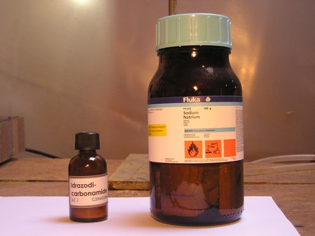
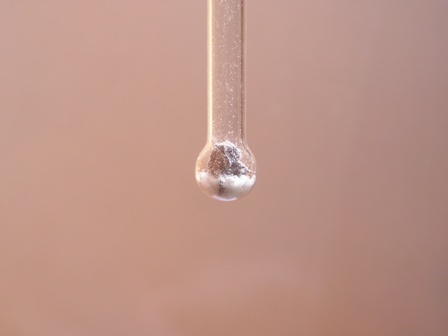
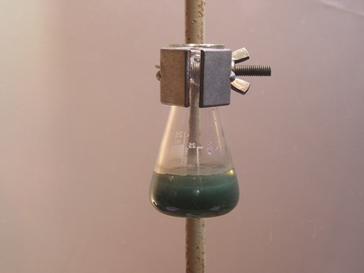
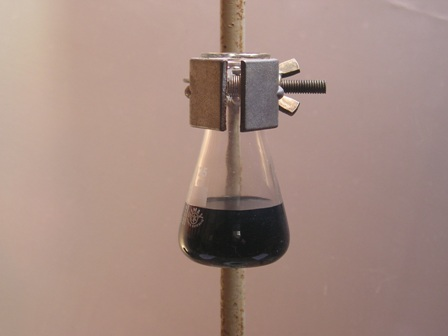
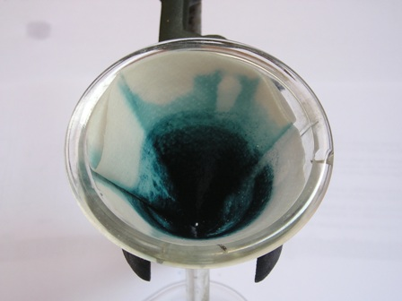

Questa prima "lasagnata" (ved. post precedente) l'ho fatta come prova dimostrativa per la rilevazione dell'azoto, pertanto non sarà una vera ricerca ma una conferma, dato che sono partito volutamente da una sostanza ben ricca in azoto (circa il 47%!) per rendere sicuramente evidenti i risultati.
Come sostanza test ho usato la
idrazodicarbonamide H2N-CO-NH-NH-CO-NH2
Perchè proprio questa sostanza? Per quattro semplici ragioni: contiene azoto, ne contiene tanto e non è volatile.
Infine perchè questa sostanza è una di quelle che non serviranno mai nel lab e allora... perchè non regalarle il suo unico momento di gloria?.
Prepariamo sul banco tutto ciò che serve, ovvero una puntina di spatola di idrazodicarbonamide, un paio di frammentini di sodio metallico, un tubetto da saggio, la solita vetreria, qualche accessorio e naturalmente il fedele bunsen.


La sostanza azotata e il sod io Il tubetto pronto per la pirolisi
Le foto mostrano questi preparativi "statici", mentre lascio alla fantasia di chi legge immaginare le fasi "dinamiche", ovvero l'arroventamento del tubetto sul bunsen e la sua "decisa" reazione quando lo si butta in acqua.
Le operazioni da fare sono esattamente quelle descritte la volta scorsa, ottenendo alla fine una soluzione limpida che dovrebbe contenere, oltre a idrossido di sodio e residui della pirolisi, anche cianuro di sodio NaCN.
Andiamo a verificare.

Aggiunta di solfato ferroso
Messi in una beutina circa 15 ml (ne basterebbero molti meno) della soluzione prima ottenuta, aggiungere una puntina di spatola di FeSO4 e mescolare; nell'ambiente così basico si forma subito un precipitato gelatinoso grigio verdastro di composti ferrosi, ma si forma anche il complesso ferrocianuro sodico Na4[Fe(CN)6] solubile e incolore, quindi non visibile.
Aggiungere una goccia di acqua ossigenata (o anche insufflare dell'aria per un po' di tempo) per ossidare parzialmente a ferrico il solfato ferroso, in modo da avere in soluzione anche ioni -Fe3+.
La soluzione si colora immediatamente in blù per la formazione di blù di Prussia, dal fortissimo potere colorante.


Formazione di Fe4[Fe(CN)6]3 Il residuo di Blù di Prussia
Le foto mostrano la filtrazione e l'abbondantissimo residuo di ferrocianuro ferrico rimasto sulla carta da filtro, conferma assai evidente (lo sapevamo già!) che il campione in oggetto conteneva azoto e quindi aveva generato NaCN.
Naturalmente il test non porta sempre a risultati così appariscenti, che dipendono da molte variabili; a volte il blù è appena percettibile, ma in questo caso ho voluto rendere l'idea in maniera eclatante.
Lo zolfo e gli alogeni da soli sono troppo facili da scovare con la reazione di Lassaigne e quindi non farò queste due prove; molto più impegnativa è la ricerca di tutti e tre gli elementi CONTEMPORANEAMENTE!
Prossimamente presenterò quindi l'ultima esperienza con una sostanza (ho faticato un po' a trovarla) che ha nella molecola, oltre a carbonio, idrogeno e ossigeno, anche azoto, zolfo e cloro... ci sarà da divertirsi!